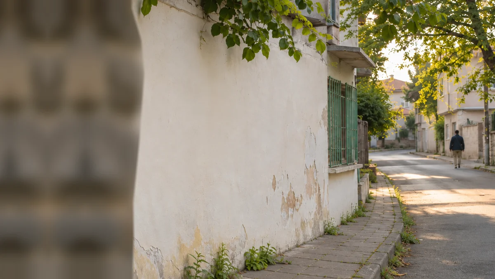

Deney tamamlandı · video yayında
Machiavelli / Prens deneyi
Üç düşünce yedi takvim günü boyunca gerçek karar anlarında etik biçimde sınandı; sonuç olumlu fakat kısmi.
7 gün · tamamlandı

Bir kitaptan, bir sorudan ya da gündelik bir alışkanlıktan başlayan deney dosyaları.
Deney tamamlandı · video yayında
Üç düşünce yedi takvim günü boyunca gerçek karar anlarında etik biçimde sınandı; sonuç olumlu fakat kısmi.
7 gün · tamamlandı
Deney devam ediyor
60 gün boyunca kendi davranışlarım üzerindeki kontrolü gözlemliyorum. Kararlarımı ve zorlandığım anları kayıtlarla değerlendireceğim.
60 takvim günü · seçilen deney süresi
Kitap tamamlandı · 7 günlük deney devam ediyor
Kitabı tamamladım. Üç yöntemi seçtim. Şimdi yedi gün boyunca gerçek hayatımda test ediyorum.
7 gün · planlanan uygulama süresi
FİKİRDEN DENEYE
01 FİKİR
Bir düşünceyi anlamak için önce onun ne iddia ettiğini araştırıyorum.
Kaynağı oku. İddiayı anla. Soruyu belirle.
02 DENEY
Fikirleri yalnızca okumuyor, gerçek koşullarda test ediyorum.
Uygula. Zorlandığın anları kaydet. Değişimi izle.
03 SONUÇ
Başarıları, başarısızlıkları ve sınırları olduğu gibi paylaşıyorum.
Sonucu, kanıtları ve eksikleri birlikte değerlendir.
Kitaplar, kaynakları ve kendi yorumlarımız arasında yeni bir okuma yolu.
Arşivi keşfet